01 · Salão
Por ordem
de chegada
Reserva não rola e a casa recebe grupo de até 6 pessoas. Sexta e sábado a fila se forma antes de abrir: quem chega às 18h janta às 18h.
Carne na chapa, e pão tostado desde 2017.
Antes de vir
A casa é menor que a fila. Dá uma olhada aqui antes de sair, pra noite não virar vacilo.
01 · Salão
Reserva não rola e a casa recebe grupo de até 6 pessoas. Sexta e sábado a fila se forma antes de abrir: quem chega às 18h janta às 18h.
02 · Delivery
Entrega é só pelo iFood. É lá que o cardápio e o preço ficam certos, burger do mês incluso. Se você procurou em outro app e não achou, é por isso.
03 · WhatsApp
Quer saber como tá a espera hoje ou se o burger do mês ainda tá rolando? Manda mensagem que a gente responde.
Edição limitada
Uma vez por mês a cozinha solta uma receita nova, no salão e no delivery ao mesmo tempo. Fica algumas semanas e sai de cartaz. De vez em quando a galera pede tanto que ele ganha sobrevida. Foi o que rolou com o Califa, que nasceu pro IPA Day e acabou ficando o mês inteiro.
Legacy, o especial de setembro: burger 160 g, queijo prato, ragu de bacon, parmesão ralado, rúcula e maionese de pera caramelizada, no pão brioche.
O especial do mês é anunciado primeiro no Instagram
Cardápio
Carne de 160 g na chapa, pão brioche tostado e molho feito aqui dentro. O que muda de um pro outro é o recheio. Esses são cinco; tem mais.
Pão, hambúrguer 160 g e queijo prato. Sem lugar pra esconder defeito.
R$ 35Molho cheddar cremoso, cebola caramelizada, bacon e picles da casa. Acompanha maionese de alho.
R$ 43American cheese de gorgonzola, geleia de bacon, cebola crispy e maionese de alho negro no pão brioche.
R$ 45Sobrecoxa empanada e frita, cheddar cremoso, bacon, tomate, alface e old sauce. Nasceu junto com o Old.
R$ 40Queijo cheddar, bacon, brie empanado, jalapeño e rúcula. O que leva o nome da casa.
R$ 6035 itens no cardápio completo, entre burgers, chickens, entradas, veg, doces e cervejas
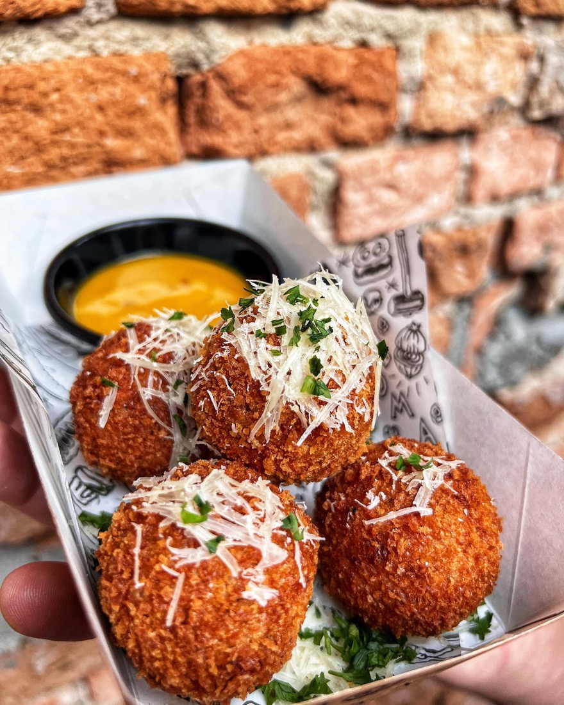
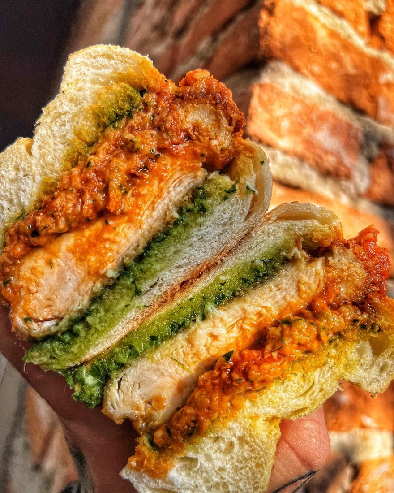
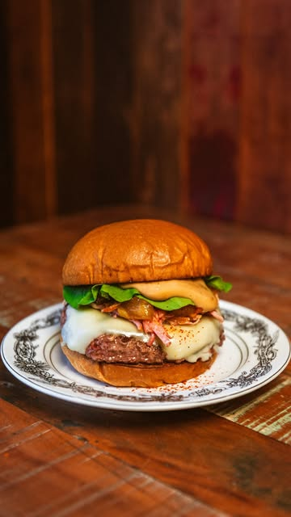
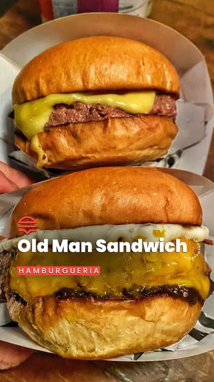
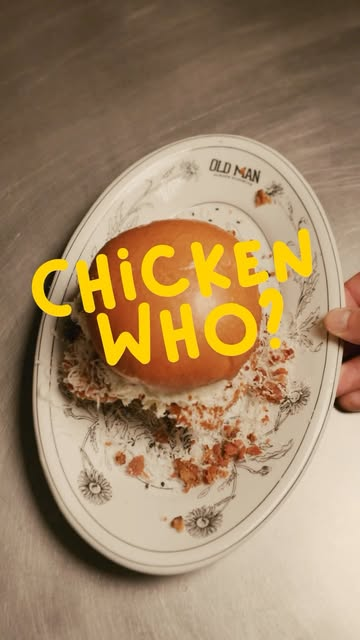
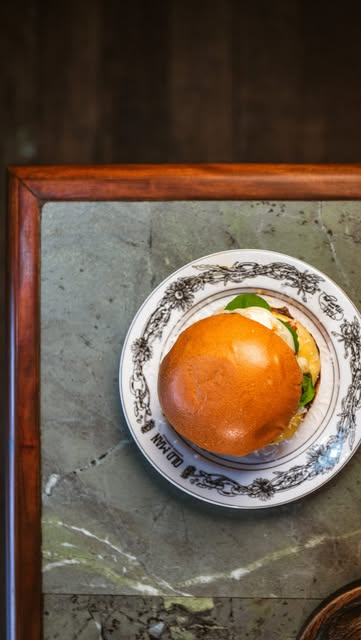
A história
Old Man é homenagem pros avós. A casa começou em 2017 na garagem da Dona Margarida, em São Caetano, com o que tinha ali. O apelido ficou na placa: Garage Sandwich. A pegada do cardápio vem do mesmo lugar: trabalho de artesão, do jeito que os antigos faziam.
De lá pra cá a garagem virou salão, a fila dobrou a esquina e o Barcelona entrou na conversa dos melhores hambúrgueres de São Paulo. O que não mudou foi quem abre a cozinha às 18h e fecha às 23h30.
“Uma coisa que eu aprendi dentro da minha família é que a maior demonstração de amor é servir as pessoas.”
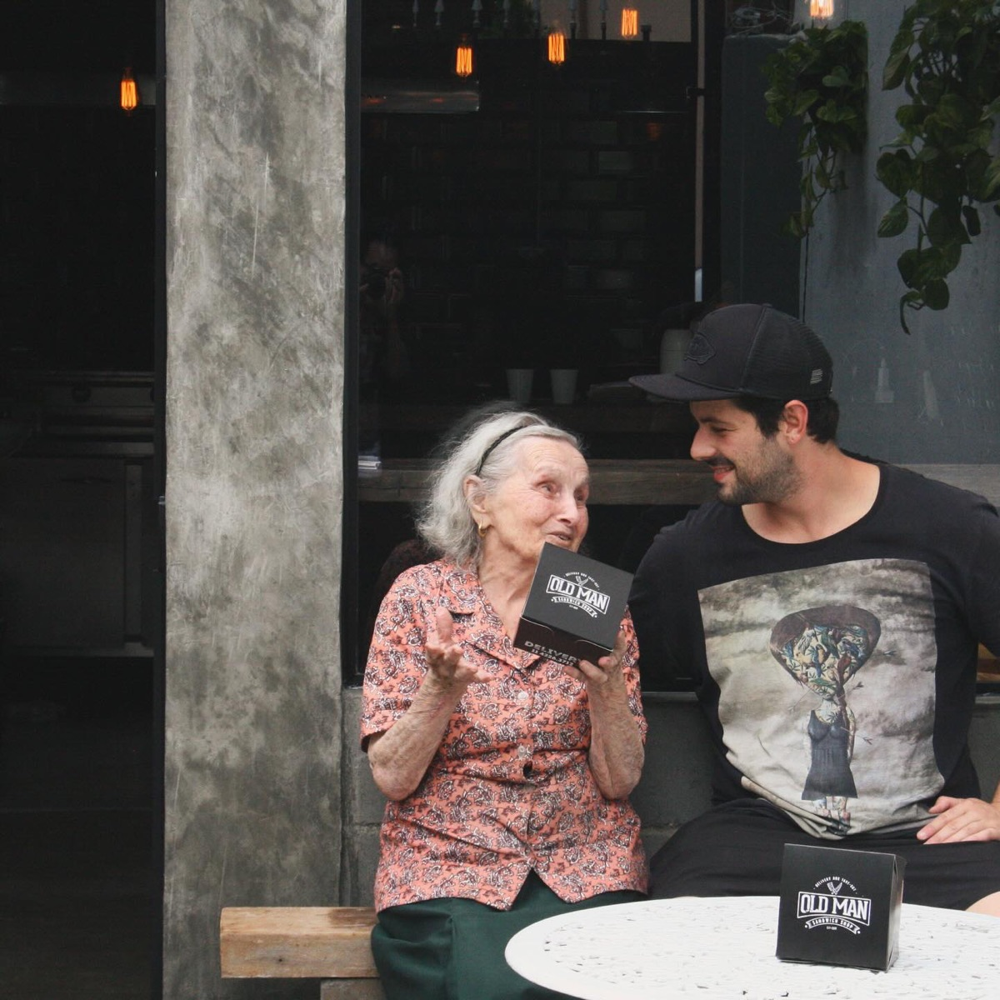
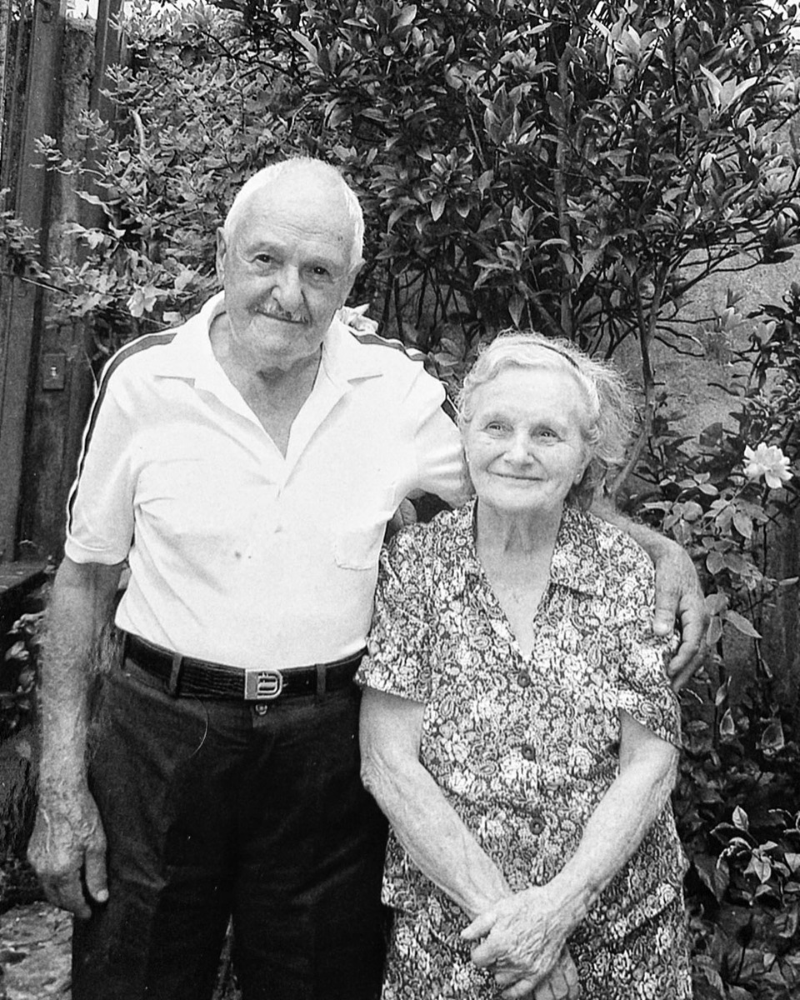
O motivo de estarmos aqui.
A garagem era dela
Antes de virar hamburgueria, o endereço era a casa da Dona Margarida. A garagem virou cozinha, a cozinha virou fila e a fila virou isso aqui. O nome da casa é por ela.
É por isso que Old Man não é só um nome em inglês na placa. É quem ensinou a receita, emprestou o fogão e ficou olhando dar certo.
“A vó deve estar muito orgulhosa de ver tudo isso acontecer aqui na casa dela.”
Conquistas
O principal ranking do Guia do Hambúrguer olha São Paulo e Grande São Paulo inteiras. O Old Man tá lá desde 2023, vindo de São Caetano.
2ª melhor hamburgueria de São Paulo e Grande São Paulo no principal ranking do Guia do Hambúrguer.
Quatro anos seguidos no pódio do mesmo ranking, dois deles em primeiro lugar.
Indicada ao Prêmio Hambúrguer Perfeito, de melhor burger do Brasil, pelo @hamburguerperfeito.
4,9 no iFood e 90,6 mil pessoas acompanhando a casa no Instagram.
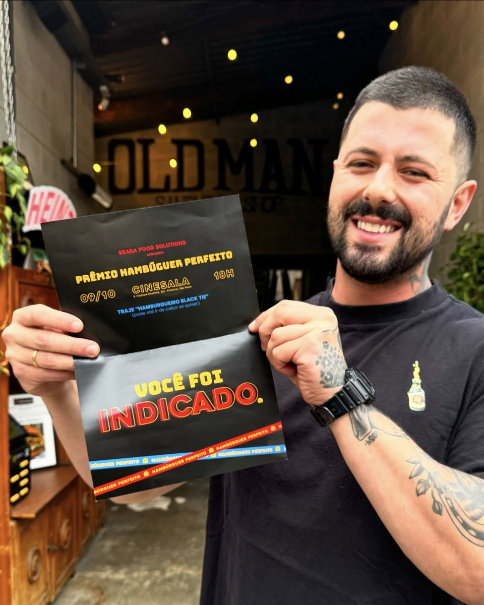
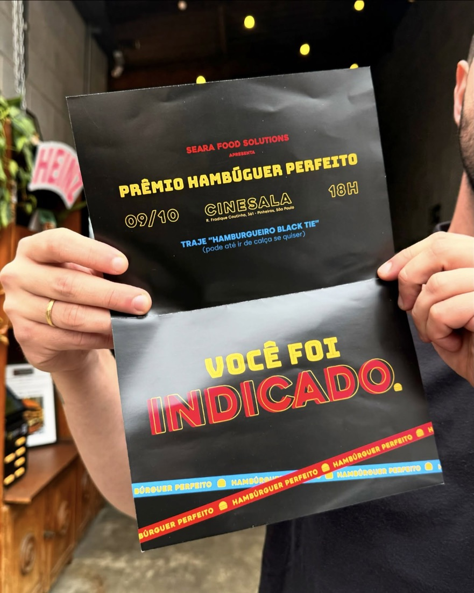
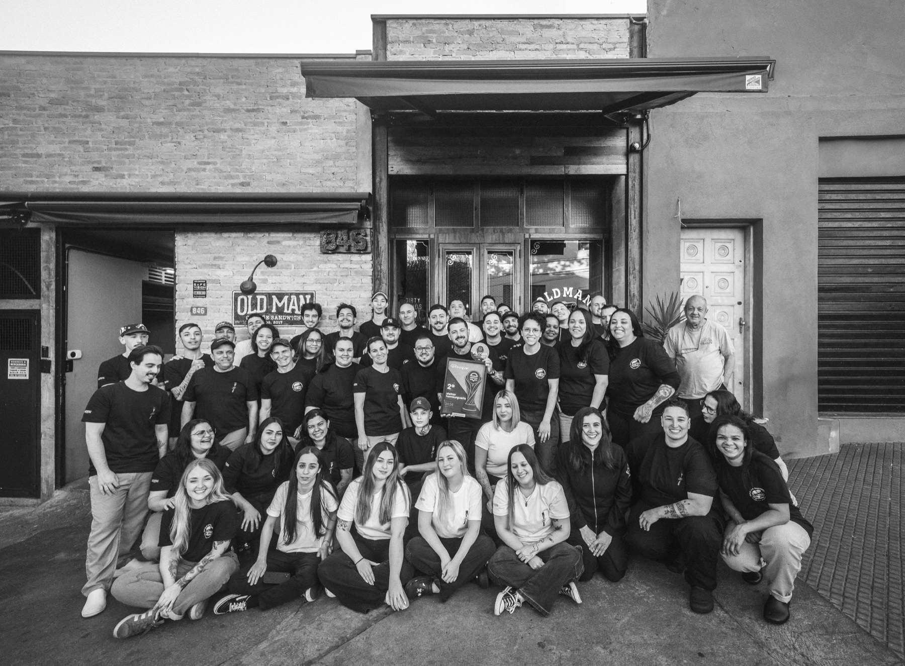
“Esse prêmio é de cada um que sai de sua casa todos os dias pra fazer o Old Man acontecer, é de cada cliente que pede, vem, volta e indica.” Foi assim que a casa comemorou o resultado de 2026, com a equipe inteira na calçada da Rua Tapajós.
Representar São Caetano e o ABC no meio dos grandes nomes de São Paulo é a parte que mais dá orgulho.
@oldmansandwich
O burger do mês, os rolês e os bastidores saem primeiro por lá. Toca em qualquer foto pra abrir o post.
Onde fica
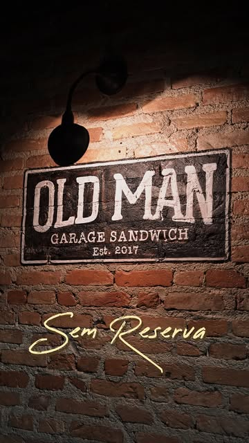
Dúvidas
Não. Atendimento por ordem de chegada, em grupo de até 6 pessoas. Sexta e sábado a fila começa antes de abrir, então chegar perto das 18h é a melhor forma de esperar menos.
Sim, pelo iFood. É o único canal de entrega e também onde o cardápio e o preço ficam certos, burger do mês incluso. Se você procurou em outro app e não achou, é porque a casa não tá lá.
Das 18h às 23h30, todos os dias. Em eventos especiais a casa às vezes abre mais cedo, e isso é sempre avisado no Instagram.
Em geral não: é receita de tempo limitado, feita pra sair de cartaz. Mas já rolou de a procura segurar o lanche por mais tempo. O Califa nasceu como especial do IPA Day e acabou ficando agosto inteiro.
Até 6 pessoas. Acima disso a casa não consegue sentar todo mundo junto. E não vale mandar uma pessoa na frente pra segurar mesa: a fila corre por ordem de chegada do grupo completo.
Rua Tapajós, 846, bairro Barcelona, São Caetano do Sul, SP, CEP 09551-230. O ponto é na divisa com a zona sudeste de São Paulo, a poucos minutos do centro de São Caetano.